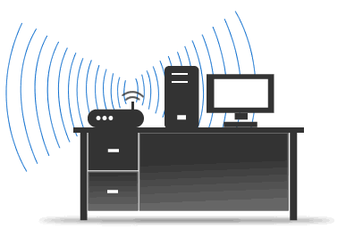

Ubicación
Los equipos como el cable modem o el decodificador, se deben instalar en zonas abiertas y aireadas.
No deben quedar sobre telas o carpetas de lana, cubiertos por algún objeto ni encerrados en algún
tipo de mueble.
Para los Cable Modem Wi-Fi. Se deben ubicar de forma tal que se garantice la mayor cobertura
inalámbrica posible.
